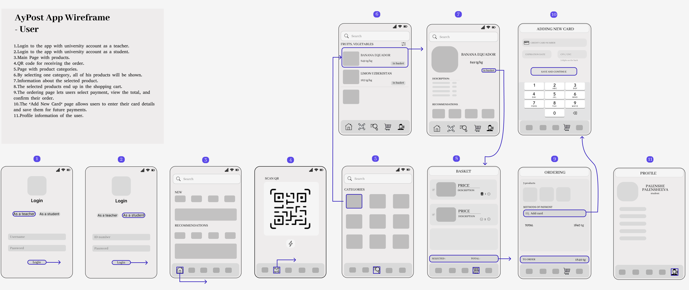

Project Goal
The goal of this project is to redesign the shopping experience at the SDU market to minimize long lines and improve overall customer satisfaction. By understanding customer needs and preferences, we aim to design a user-centered solution that enhances convenience and reduces wait times.
Participants were SDU students who regularly visit the SDU market. They typically visit the market to purchase snacks and drinks due to the wide variety available. Most students choose this market over other on-campus options due to its selection.
1. Data collection
Interview FIndings
Waiting Times:
- Average queue time: 10-15 minutes during breaks between classes.
- Customers often feel rushed and stressed, especially when there is a risk of being late for lessons.
Overcrowding:
- The store becomes congested, particularly around popular product areas like snacks and drinks.
- Customers frequently bump into one another, reducing comfort and efficiency in browsing.
Checkout Delays:
- Сheckout counters are available, but they are not always operational simultaneously.
- Large baskets or technical issues (e.g., internet payment failures) significantly slow down the checkout process.
Abandoned Purchases:
- Many customers abandon their intended purchases if lines are too long.
- Others leave disappointed when desired products are unavailable.
Suggestions from Participants
Pre-Order System:
- Create an app or in-store terminal for customers to select and pay for items in advance.
- A dedicated pickup zone would allow users to collect their items quickly without waiting in line.
2. Data Analysis
3. Prototyping
AyPost App Wireframe - User
AyPost App Wireframe - Manager
Full version of wireframes you can see by this linkPrototype

4. Evalution
RITE Testing
The RITE methodology will be used in the testing process. First, 3-4 participants will test the system, and their interaction will be monitored to identify usability problems, such as difficulties navigating the interface or scanning QR codes. Changes will be made immediately to eliminate recurring problems, and modified prototypes will be tested with the involvement of new participants. This iterative cycle will continue until all critical usability issues are resolved.
The testing process involves simulating the user's complete route. At first, participants will use the online system to view, select products, pay and receive a QR code. Key indicators include the number of completed tasks, time spent, and any errors such as problems getting a QR code.